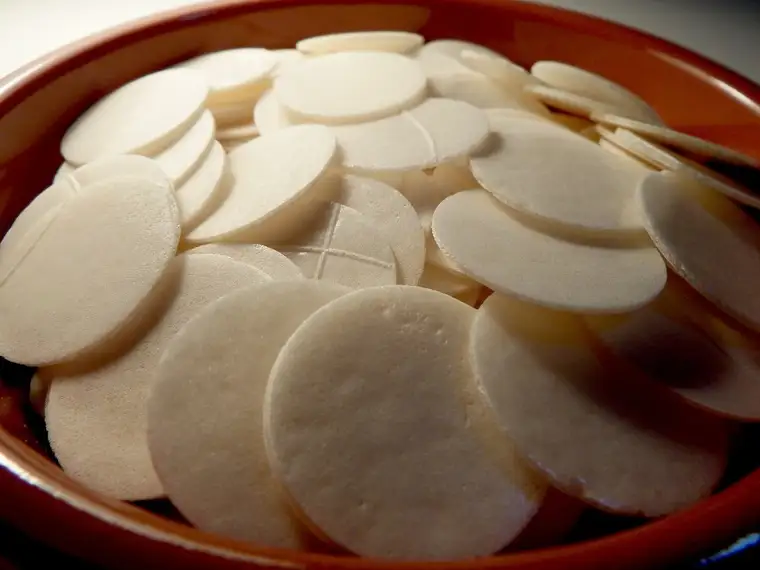

FARGO – When Dan Triller was in the hospital for two weeks 15 years ago, he drew much sustenance from receiving daily Communion brought by a Eucharistic minister. “I’ve been attending daily Mass ever since, whenever possible,” he says. “It’s funny how the Lord finds ways to get your attention.”
He later became a Eucharistic minister himself, bringing Communion to Catholic patients who request it at Essentia—the hospital served by Sts. Anne and Joachim Church—and, just before the Covid pandemic, agreed to lead the ministry for his parish.

But Triller never got to see it through, due mainly to hospital policies during Covid. Recently, however, it’s being revived, and he can’t wait to resume the ministry.
“We went through (early) Covid not being able to receive (the Eucharist),” he says. “I’m anxious to get back and give everyone that opportunity.”
Heaven in the hospital
Mary Kay Schott, a retired nurse, has been on both the receiving and offering ends of the ministry, and describes it as if the host is a slice of heaven coming into the hospital room.
“I’ve been with loved ones who have been dying, and in those times, you can feel the holy angels just hovering,” she says, recalling St. Therese of Lisieux’s account, in “Story of a Soul,” of her First Communion. “I’ve been present numerous times when viaticum has been received. It’s such a powerful moment.”

Viaticum is the Eucharist given to a dying person, or one in danger of death, and is often accompanied by the sacraments of anointing and Confession and an apostolic blessing—sometimes referred to as “last rites.”
“When receiving when I’ve been ill, there’s a sense of peace and comfort, like God’s arms wrapped around you,” Schott says. “And then the sigh of the spirit. You just go, ‘Ahh, Jesus is within me.’ For those of us with faith, there’s nothing better than that trust and peace in our times of need.”
A priest’s presence
The presence of priests in the hospital to distribute the Eucharist has mostly continued in these last years.
Fr. Robert Foertsch keeps his pager nearby for such needs, and says he appreciates the chance to tend to the ill in the hospital. “I think especially with hospital ministry, priests meet people in their most vulnerable moments, when we’re born, married or dying,” he says.

Sometimes, it might be for a routine surgery or ongoing illness that he’s called in. “To be able to say, ‘God is with you in this,’ that’s an important message, especially when people start to feel fear, alone or to despair,” he says. “It’s tangible in a way to know that their priest is bringing Jesus to them, because Jesus is here in the Eucharist.”
Even non-religious people have called Foertsch in to tend to the needs of a family member, he says, explaining that Catholics believe the Eucharist is the body, blood, soul and divinity of Jesus in a real, not just symbolic, sense.
“Through the reception of (Jesus), we’re being fed in a way ordinary food doesn’t do,” he says. “It’s meeting the needs of the whole person—not just physically, but spiritually as well.”
It’s also a witness, he says, to those who need to know that “the Church is here, and the Church cares.”
A child is cheered
MaryJo Zacher has been working as a chaplain for 26 years—currently at Riverview Place—and says she’ll never forget when, hospitalized as a child around age 8, she received Jesus in her bed at St. John’s Hospital.
“I remember being very impressed with how special that was,” she says, and how the nurse came in early in the morning, turned on the lights and put a white cloth on her chest. “She said, ‘Father will be around soon,’” and recalls hearing a bell ring at the nurse’s station, a pause, and another bell. “The next time, he was right outside my room, and he came in fully vested.” She received Jesus on the tongue. “It was so reverent and special.”

Now, she says, bringing Jesus to others who cannot be at Mass is “the biggest privilege.” “It’s such a beautiful time also to see the depth of people’s faith,” Zacher notes. “You see it deep in their eyes and in their facial expressions.”
Jesus in the flesh
Many describe it in terms of relationship, and those distributing Communion as being the hands and feet of Christ.

When she was in her early 30s, Kathy Nelson, a mother of three small children, landed in the hospital for several weeks from salmonella poisoning. The Eucharistic minister who brought her Communion during that rough time ended up becoming a good friend.
“Clarice McConnell from St. Mary’s brought me Communion every day, and there was such a connection between us,” Nelson shares. “She would come to my room last so she could spend more time with me. It was such an amazing blessing.”
A year after her illness, Nelson’s son, only 8, died in a car crash. McConnell, who had gotten some Rosaries blessed by the pope, came to her home in tears with the last of those blessed beads, saying, “I was saving this for something special, and this obviously was it.”
When Robbin Roeber’s sister, Dynae, was on her deathbed with cancer in 2007, she couldn’t receive the Eucharist, but since she’d earlier expressed a desire to receive Communion, after years being away from the faith, the priest told Roeber she could receive it on her behalf.
“I just felt so good that there was something I could do,” Roeber says. “She died a few hours later. I felt like, OK, she can be at peace now.”
Pauline Savageau began bringing the Eucharist to her mother-in-law, Winnie, unable to attend daily Mass during her confinement at an assisted-living facility. “It’s a wonderful opportunity, not only for the person receiving, but to witness that devotion to the Eucharist, that faith,” she says.
In her training for this significant task, her priest reminded Savageau of the importance of transporting the Eucharist properly. “You have Jesus with you in the car, so you can’t turn on the radio or do other errands. It’s such a sacred thing,” she says. “You go immediately to the person and need to be so reverent.”
Dying with a smile
Shannon O’Connor shares about when he was bringing the Eucharist to patients at Altru Hospital in Grand Forks—remembering especially a mother of some friends ill with cancer whom he’d visit often.
Many times, she couldn’t receive Jesus, he says, due to an inability to ingest anything by mouth. “Instead, she and I would pray together, and I got to know this sweet woman over several months.”
One Sunday, he walked into her room with “Jesus in my pyx,” the container holding the Eucharist, he says. She was awake and smiled, and said she would like to receive Jesus that day. “It was a beautiful moment, and my heart felt full.”
A couple days later, he learned that she’d died that same Sunday. Not only that, but family members told him she’d been in a coma the day he gave her Communion.
“It seems that for some wonderful reason, our dear Lord blessed me with the awesome opportunity to pray and distribute the Holy Eucharist to this beautiful woman before she died,” O’Connor says. “Who am I that I was able to be part of this experience? Recounting this event, my eyes are filled with tears. May we all receive Jesus on our last day, with a smile on our face.”
[For the sake of having a repository for my newspaper columns and articles, I reprint them here, with permission, a week after their run date. The preceding ran in The Forum newspaper on Oct. 28, 2022.]